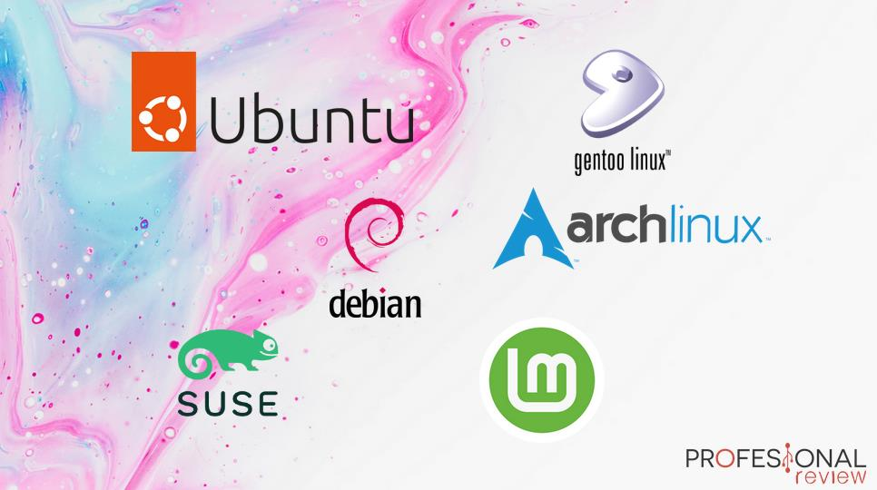

Los sistemas operativos para PC son el software fundamental sobre el que se ejecuta nuestro ordenador. Por tanto, todos debemos instalar el mejor sistema operativo para nuestras necesidades. Lo normal es que se trate de Windows, pero hay que elegir la versión correcta (¿10 u 11? ¿Qué edición). También podemos instalar un sistema Linux y beneficiarnos de todas sus ventajas, o incluso podemos aspirar a instalar Mac en nuestro ordenador.
Sistemas operativos Windows para PC, la opción universal
Como decimos, lo más habitual a la hora de hablar de sistemas operativos para PC es instalar Windows. El sistema de Microsoft está presente en el 75% de los ordenadores, todos lo conocemos y todos lo hemos usado. Además, es el sistema de referencia para PC gaming, y en general será compatible con cualquier programa que vayamos a utilizar.
Resumidamente, Windows nos proporciona diversas ventajas: Interfaz que todos conocemos y sabemos usar. Ecosistema de programas muy diverso, y todos sabemos instalar programas en Windows. En general, no tiene incompatibilidades, y si funciona bien la experiencia de usuario es excelente.
En cambio, también tiene sus desventajas: Es de código cerrado, lo que da menos libertad a los usuarios expertos. Para programadores y usuarios avanzados, su «shell» es mucho peor que el de sistemas Linux / Unix. Al tener tantos años de desarrollo detrás, y probablemente un código interno bastante caótico, es bastante más pesado que la mayoría de sistemas Linux, consume más recursos y es más susceptible a fallos. Más susceptible a virus y malware.
Windows 10 vs Windows 11, ¿cuál merece la pena?
Windows 11 es la última actualización de esta serie de sistemas operativos para PC, y seguro que te estarás preguntando si merece la pena actualizar desde Windows 11, o instalar este sistema en vez de Windows 10. Básicamente, lo que trae Windows 11 es una interfaz gráfica renovada, con una estética bastante diferente que busca la limpieza y la consistencia. La verdad es que muy consistente no es (buena parte de la interfaz sigue recordando a hace muchos años), pero en general lo que se aprecian son mejoras respecto a Windows 10. No funciona peor ni da más problemas, o al menos eso es lo que nos parece tras varios meses de uso. Por tanto, no hay grandes motivos para quedarse en Windows 10: al cambio de interfaz en Windows 11 te acostumbrarás con gran facilidad, disfrutarás de las últimas ventajas y novedades, además de muchas mejoras de seguridad y funcionales.
Por supuesto, no todo en Windows. Hay una inmensidad de sistemas operativos con núcleo Linux que son realmente interesantes, y que nos parecen muy recomendables si no estás cómodo con el sistema operativo de Microsoft. Todos los que se pasan a Linux tienen sus motivos, y ahora vamos a enumerar algunos de ellos: - Querer usar solamente software libre o de código abierto, esto incluye inevitablemente al sistema operativo, y esta preferencia suele ser por convicción y por una cuestión ética. - Preocupación por la privacidad y la seguridad. - Deseo de un sistema más ligero y adaptado a las necesidades concretas de cada uno. - Necesidad de alguna característica avanzada solo posible en un sistema Linux. - Búsqueda de una interfaz más adaptada a las necesidades de uno mismo. - Por supuesto, querer un sistema operativo gratuito y no tener que pagar por una licencia. - Por supuesto, quien no sea un usuario demasiado avanzado, o esté contento con el servicio que le presta Windows, no tiene por qué cambiarse a Linux.
 Y, en caso de querer usar Linux, ¿qué distribución instalar? Como decimos, hay una gran cantidad de «distros» distintas. Cada experto tiene su preferida, muchos prefieren instalar sistemas operativos basados en Debian, otros en Arch, etc. En este artículo, nosotros vamos a recomendar Ubuntu, al ser una de las más conocidas y amigables con el usuario medio, pero que nadie se lo tome como un desprecio a las demás distros de Linux.
Una de las grandes ventajas de Ubuntu es su facilidad de instalación y gran compatibilidad de serie, de forma que no hay que entrar en procesos de instalación mucho más complejos como ocurre con Arch Linux, por ejemplo. En general, tiene una interfaz amigable e instalar aplicaciones es sencillo, por lo que toma muchas de las ventajas de Windows en un sistema muy ligero y fácil de usar. Eso sí, para usuarios más «puristas» en lo que se refiere al software libre, es evidente que Linux no es una opción. Ubuntu es totalmente gratuito y de código abierto, pero está desarrollado por una empresa privada que en múltiples ocasiones ignora a la comunidad generando ciertas polémicas.
Regresar al indice